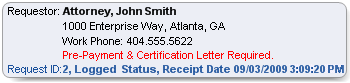

Requests for patient records are submitted to a healthcare enterprise by various entities such as patients, consulting physicians, legal authorities, or government agencies. The ROI request becomes a list of patient records you select to release and is the basis for associated tracking and billing activities.
Requests for patient records focus not on demographic or identification data, but on tangible patient documents.
Patient documents include:
Document images
(referred to as MPF documents) that reside in the McKesson Patient Folder
repository. These could be images of clinical documents (such as examination
reports) or global documents (such as a driver's license).
The system outputs scanned documents at the same scale used during
capture and not as rendered in the viewer (for example, a driver’s license
is printed based on how it was scanned and not on best fit). The system
shrinks images to fit the selected paper size while accommodating header,
footer, and print margins. Margins are set by the document capture applications
(that is, scan, COLD, or HL7). Color output depends on your print device;
if color is not supported, the output is rendered in grayscale.
In addition, the MPF DCS/QCI Workstation allows users to add pages
to patient documents by either appending or inserting them. If pages are
inserted into a patient document
that has been released on an ROI request, then the page numbers on the
released version will no longer match the version stored in the system.
Appended pages do not have this
affect.
Non-MPF documents that exist as paper-based items outside the repository.
Electronic documents from an external clinical system that have been acquired from a local file system or via online connections and "attached" to the patient's record.
Access to requests
Your MPF Workstation user profile controls your ability to access documents and use ROI functions.
If you do not have certain permissions, some buttons and menu options are hidden. If you cannot perform an operation, you most likely do not have appropriate permissions, and you should consult your system administrator. If you are logged into the ROI Module when rights are granted, you must log out and log back in for the change to take effect.
Based on your security rights, the ROI Module enables you to perform a variety of operations relating to ROI requests.
Operations controlled by your security rights include the following.
|
|
Request status
All requests have an associated request status, and the system automatically updates the request status when certain events occur. You can also manually change request status when needed.
The status is automatically updated when you:
Create a new request (status is set to Logged)
Associate an Auth-Received or Auth-Received Denied request with a patient and a requestor (status is set to Logged)
Generate a pre-bill quote (the system automatically updates the status to Pre-Billed)
Release at least some documents on a request (status is set to Completed, but only if you select 'Yes' when prompted; if you select 'No,' the current status is retained)
Valid request statuses are:
Auth-Received (cannot be manually assigned)
Auth-Received Denied (cannot be manually assigned)
Logged
Pended
Denied
Canceled
Pre-Billed (cannot be manually assigned)
Completed
Unknown (this occurs when the system cannot determine a status; you must manually assign a status)
While the system allows authorized users to manually change request status, your MPF Workstation security permissions may restrict your options.
The system automatically assigns the Auth-Received, Auth-Received Denied, and Pre-Billed status. You cannot manually assign these statuses, regardless of your security rights.
To change the status of a request to Completed or Logged, you must have the ROI Create Request and/or the ROI Modify Request permission.
To change the status to Pended, Denied, or Canceled, you must have explicit permission to pend, deny, or cancel requests. The system displays only the options you have permission to use.
Certain status changes trigger billing adjustments.
|
If |
And |
Then |
|
Status is changed to Denied or Canceled |
A balance due exists for the request |
The system automatically writes-off the balance due. The write-off is at the request level and not at the individual invoice level. The system resets the balance due to zero via a credit adjustment for the same amount as the balance due and makes an entry into the event history file. Note: Subtotals that were used to derive the total cost are retained in case the status is later changed to Pended, Logged, or Pre-Billed. |
|
Status is changed from Denied or Canceled |
A balance due exists for the request |
The system recalculates the balance due by reversing an earlier write-off (credit adjustment). For example, if a $50 credit adjustment was made when the status was changed to Denied or Canceled, the system now debits $50 to restore the original balance due. The system always uses the previous write-off amount in the event of multiple write-offs. The system also inserts an entry into the event history file. |
New requests
Requests for information usually arrive manually (such as in person or by phone, fax, or mail) and are recorded on a paper document. This "authorization document" is scanned, indexed, and released using the McKesson Patient Folder DCS/QCI Workstation module. Once the authorization document is successfully released into the MPF system, the system automatically creates a skeleton ROI request and assigns the "Auth-Received" (or "Auth-Received Denied") status to it. Requests are then available for processing and for searching.
How is the Auth-Received request created?
During ROI Module installation, McKesson personnel implement a process that creates an entry in the MPF Patients table for every month (where MRN=yyyymm), and an entry in the MPF Encounters table for every day (where Encounter number=yyyymmdd). These entries are referred to as "day folders." Installers also configure "Auth-Received" and "Auth-Received Denied" document types to use with authorization documents.
At the DCS/QCI Workstation, users scan one or more authorization documents and associate the Auth-Received document type and an MRN-Encounter number with each document. For an existing MPF patient, the MRN-Encounter number represents the actual patient. For a supplemental (or non-MPF) patient, the MRN-Encounter number represents a day folder.
At the DCS/QCI Workstation, users release the batch to the normal release queue, and the batch is subsequently processed by the Index Upload component. Because the Auth-Received document type is configured to require assignments, the system creates a workflow assignment for each document, and then adds the document to the MPF database.
The MPF Workflow Agent processes these workflow assignments by creating ROI requests for each document. For an MPF patient, the request contains the patient's MRN-Encounter number. For a non-MPF patient, the request contains the day folder's MRN-Encounter number, and ROI Module users must enter patient information when they access the request.
Note: Scanning the authorization document is optional. You can create an ROI request manually without scanning the authorization. However, for several reasons, scanning the authorization is the preferred method of creating an ROI request.
The authorization will be properly associated with the request and will pass through status events in the proper sequence.
If you manually create a request and then scan its corresponding authorization document, you will create a duplicate request.
Auditing
Every status change and ROI action can be audited.
Auditing is controlled by MPF Workstation settings for each facility. Your system can be configured to audit the following events for requests:
Uploaded (audit code N) - audits the acquisition of Clinical Summary documents from an external clinical system
Released (audit code R) - also audits the success or failure of turnaround time notifications that are sent to clinical systems when documents are released
ROI Log (audit code 1)
ROI Edit (audit code 2) - includes Completed, Logged, and Pre-Billed status events
ROI Delete (audit code 3)
ROI Deny (audit code 4)
ROI Cancel (audit code 5)
ROI Pend (audit code 6)
ROI Post (audit code 7)
ROI View (audit code 8)
ROI Report (audit code 9)
For each status change event, the audit file captures who made the change, the previous and new status, the date and time of the change, and facility, encounter, and MRN information.
Request reasons
You must provide a reason when you create a request. The system displays a list of reasons that have been defined by your site and allows you to select a reason when you create the request.
Requestor information box
The requestor information box displays on most of the screens used to maintain requests. The information box identifies the requestor's type (attorney, patient, and so on), name, address and contact number, and whether a pre-payment and/or certification letter are required. It also displays the request ID, current status and date of receipt. For example:

Requests from start to finish
Releasing documents to a requestor is a multi-step procedure. Only one user at a time can actively modify a request. Other users can only view information while the request is in use.
Create the request.
Identify the requestor.
Select patients and patient documents and/or attachments to include on the request.
Enter billing and shipping charges, discounts, and credits.
Pre-bill (if required).
Obtain a certification letter (if required).
Release the documents along with a cover letter (optional) and invoice (optional).
What do you want to do?
For requests:
Find a request
Process an Auth-Received request
For patient documents and ROI letters:
Learn more about printing, faxing, saving or emailing documents
Learn more about output jobs and queues
Add documents to a request
Add or edit non-MPF document information
Delete an attachment from a request
For release and invoice:
Learn more about release and invoice
For form descriptions:
View the Find/Create Request form description
View the Request Information form description
View the Patient Information form description
View the Release & Invoice form description
View the Release History form description
View the Event History form description